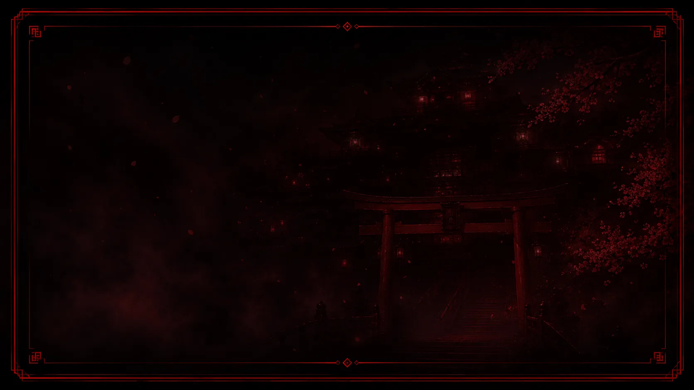
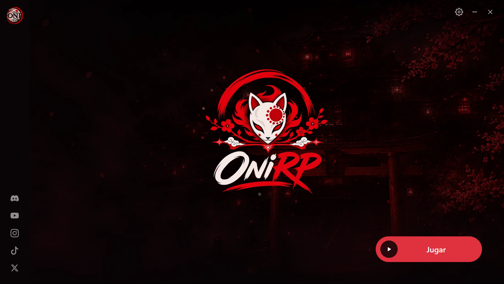
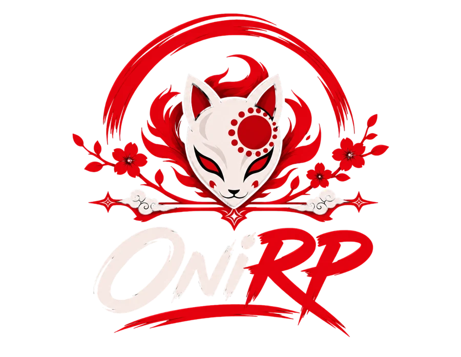

Entra a OniRP
con un solo botón.
El launcher descarga los addons del servidor a través de Steam, avisa cuando hay actualizaciones y abre Garry's Mod con los ajustes que elijas.
Comprobando versión… Instalador de ~100mb Windows 10 y 11

Qué hace el launcher
El botón sabe en qué punto estás
Al abrirlo comprueba tu carpeta de Garry's Mod y los addons del servidor. El botón principal cambia para mostrar el único paso que te falta, así nunca tienes que adivinar qué hacer.
Si vuelves al launcher después de un rato, lo comprueba otra vez por su cuenta.
- Comprobando. Lee tus librerías de Steam y el estado de cada addon.
- Elegir GMod. Solo aparece si no encuentra Garry's Mod en ninguna librería.
- Descargar. Te faltan addons del servidor.
- Actualizar. Algún addon tiene una versión nueva en la Workshop.
- Jugar. Todo está al día: abre Garry's Mod con tus ajustes.
Descarga los addons sin pasar por la Workshop
El launcher pide los addons directamente a Steam. No tienes que suscribirte a nada ni buscar la colección del servidor.
- Antes de empezar te enseña cuánto ocupa la descarga.
- El propio botón hace de barra de progreso, con el tamaño descargado y la velocidad.
- Puedes cancelar a mitad y seguir más tarde.
- Al actualizar, Steam solo baja lo que ha cambiado.
- Desde Ajustes puedes desinstalar los addons de OniRP cuando quieras.
Ajusta cómo arranca Garry's Mod
En Ajustes eliges las opciones de rendimiento y el launcher las convierte en parámetros de arranque. Prueba aquí: la línea de abajo es exactamente lo que se añade al abrir el juego.
- Encuentra Garry's Mod solo
- Busca en todas tus librerías de Steam. Si lo tienes en otro disco, lo eliges una vez y se acuerda.
- Tu estado en Discord
- Mientras el launcher está abierto, tu perfil muestra «Kimetsu No Yaiba Roleplay» con un botón al Discord del servidor.
- Te avisa de versiones nuevas
- Si sale una versión más reciente del launcher, te lo dice al abrirlo.
- Redes del servidor a mano
- Discord, YouTube, Instagram, TikTok y X en la barra lateral.
Capturas
Instalarlo
-
Descarga el instalador
El botón rojo de esta página baja el
.exedirectamente de GitHub. Si no empieza, búscalo en el apartado Assets de la página de versiones. -
Ábrelo
Si Windows SmartScreen muestra un aviso, pulsa Más información y luego Ejecutar de todas formas.
-
Abre Steam
El launcher usa Steam unos segundos para comprobar y descargar los addons, así que tiene que estar abierto con tu cuenta.
-
Pulsa el botón del launcher
Descarga lo que falte y, cuando ponga Jugar, ya puedes entrar.
